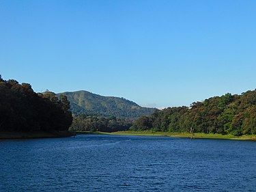

PLACES IN KERALA

MUNNAR
Munnar is a town in the Western Ghats mountain range in India’s Kerala state. A hill station and former resort for the British
Raj elite, it's surrounded by rolling hills dotted with tea plantations established in the late 19th century.
Eravikulam National Park,
a habitat for the endangered mountain goat Nilgiri tahr, is home to the Lakkam Waterfalls, hiking trails and 2,695m-tall Anamudi Peak.
.JPG)
VAGAMON
Vagamon is an Indian hill station and a revenue village primarily located in Peerumedu Taluk of Idukki district (majority area including Vagamon town),
and also Meenachil taluk and Kanjirappally taluk of Kottayam district in the state of Kerala, India.Located in the Western Ghats 25 kilometres (16 mi) east
of Erathupetta on the border of Kottayam-Idukki districts, Vagamon is famous for its natural beauty.The Vagamon glass bridge is the longest cantilever
glass bridge in India.

THEKKADY
Thekkady is situated about 257 km (160 mi) from Trivandrum, 145 km from Cochin International Airport and 114 km from Kottayam railway station.
Thekkady is located 4 km away from Kumily, a plantation town in Kerala-Tamil Nadu border. The sanctuary is famous for its dense evergreen,
semi-evergreen, moist deciduous forests and savanna grass lands.
VISIT WONDERS OF INDIA